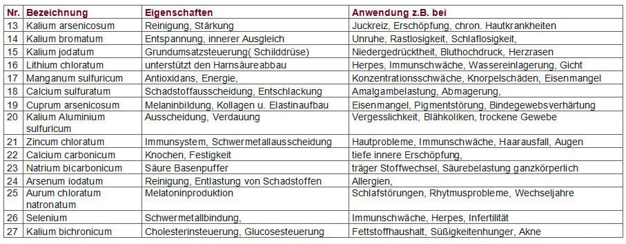
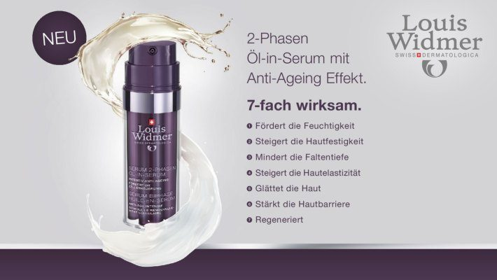

Beratung und Verkauf
- 19 Tara-Plätze
- Rezeptfreie und rezeptpflichtige Medikamente
- Beratung in Fragen Gesundheit und Krankheit
- Ganzheitlich orientierte Beratung
19 Tara-Plätze, eine eigene Rezeptur, händisch aufpotenzierte homöopathische Arzneien, eine TCM-Küche und ein Vitalzentrum für Mineralstoff-Beratung – alles unter einem Dach, drei Gehminuten vom Westbahnhof.
Was in vielen Apotheken zugekauft wird, entsteht bei uns im eigenen Betrieb – von der individuellen Rezeptur über spagyrische Mischungen bis zur chinesischen Teeabkochung.
Unterstützend zur umfangreichen Apothekenberatung besuchen Sie im VITALZENTRUM KAISERKRONE die Mineralstoffexpertin Sandra Astner. Ein Ort zum Entspannen – und um anstehende Probleme nach Terminvereinbarung behandeln zu lassen.
Schwerpunkt: die 12 Basis-Mineralstoffe nach Dr. Schüßler und die 15 Ergänzungssalze in der Potenz D12, individuell bestimmt über die Antlitzanalyse.

Eine Auswahl aus unserem Onlineshop – vorbestellen und in der Offizin abholen oder liefern lassen.

Typspezifische Beratung, Haut- und Haaranalysen und eine hauseigene Pflegelinie: Kaiserkrone Cosmetics. Jeden Monat bieten wir an bestimmten Tagen spezielle Kosmetik-Aktionen an – ganz auf Ihren Typ abgestimmte Beratungen.
Machen Sie ein gut lesbares Foto Ihres Rezepts oder scannen Sie es ein und übermitteln Sie es online. Wir informieren Sie telefonisch, per SMS oder E-Mail, sobald Ihre Bestellung bereitliegt – bitte erst danach abholen.
Ganzheitlich orientierte Beratung, eigene Herstellung, Arzneimittelversand und Bestellannahme per Telefon, E-Mail, Fax oder online.
Antlitzanalyse und Beratung zu den Schüßler-Salzen bei Sandra Astner – nach Terminvereinbarung.
Kundenkonto mit Bestellübersicht und Status, Vorteilskarte, Treuepass und Rezeptupload.
Komplementärmedizinisches Portal für Ärzte, Therapeuten, medizinisches Fachpersonal, Physioenergetiker und Kinesiologen.
Ein Wohlfühl-Konzept des Power-Feng-Shui für unsere Räumlichkeiten und durchdachte, strukturierte Prozesse bei der Tätigkeitsabwicklung führten nach dem Umbau zu einem besseren Miteinander – mit den Kundinnen und Kunden ebenso wie innerbetrieblich mit den zahlreichen Fachkräften. Das ist die Basis für stetes Wachstum und konstant verbesserte Leistung.